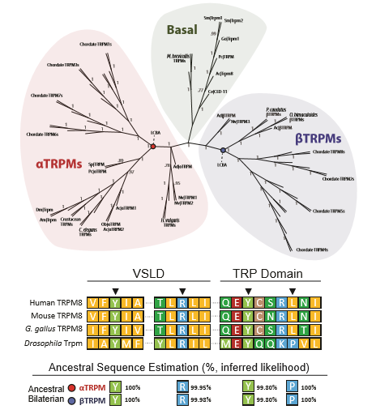
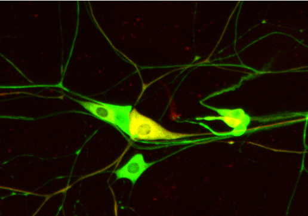
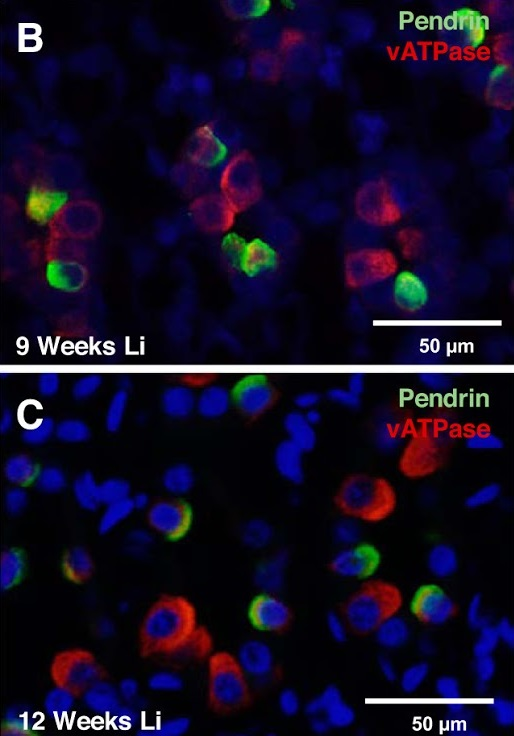
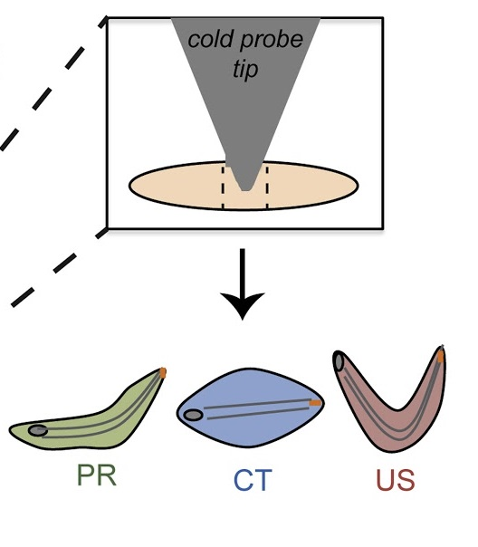
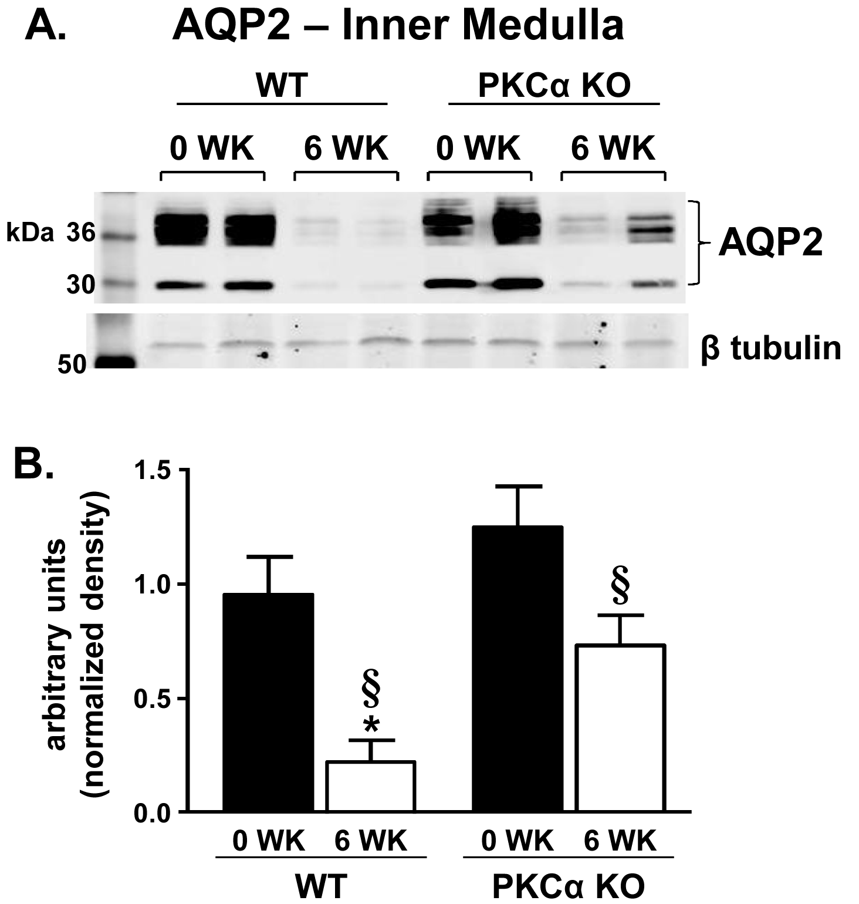

§ - Undergraduate co-author
‡ - Co-corresponding authors
* - These authors contributed equally
-

Drosophila menthol sensitivity and the Precambrian origins of TRP-dependent chemosensation
Himmel NJ‡, Letcher JM, Sakurai A, Gray TM§, Benson MN§, Cox DN‡
Philosophical Transactions of the Royal Society B (2019)- While menthol elicits cooling sensations in humans, Drosophila larvae sense menthol via high temperature/mechanical nociceptors.
- Menthol-evoked behavior is TrpA1- and Trpm-dependent, suggesting a conserved role for these sensors in menthol sensing.
- Phylogenetic analyses reveal that bilaterian TRPMs are descended from at least 3 ancestral genes.
- Ancestral sequence reconstructions suggest that some residues critical to TRP-menthol sensing are conserved from the last common ancestor of protostomes (e.g., Drosophila) and deuterostomes (e.g., humans), which existed >550 million years ago.
-

An assay for chemical nociception in Drosophila larvae
Lopez-Bellido R, Himmel NJ, Gutstein HB, Cox DN, Galko MJ
Philosophical Transactions of the Royal Society B (2019)- Constitutes the first description of acid nociception in Drosophila melanogaster larvae, and outlines a method for investigating other chemical stimuli.
- Acid application causes nocifensive rolling, which is sensitized by puncturing, but not by UV irradiation or pinching.
- Acid nociception operates via the previously described Class IV nociceptor circuit.
-

Purinergic signaling is enhanced in the absence of UT-A1 and UT-A3
Himmel NJ, Rogers RT, Redd SK, Wang Y§, Blount MA
Preprint available in bioRxiv (2019)- Disabling urea transport (UT-A1/A3 KO) predictably leads to an inability to properly concentrate urine, and decreases in urinary cAMP.
- Urinary ATP and prostaglandin levels are increased in KO animals, evidencing increased activation of ATP receptors.
- Expression of the ATP receptor P2Y2 is increased in the collecting duct of KO animals.
-

Chronic lithium treatment induces novel patterns of pendrin localization and expression
Himmel NJ, Wang Y§, Rodriguez DA§, Sun MA§, Blount MA
American Journal of Physiology - Renal Physiology (2018)- Outlines previously undescribed side-effect of lithium treatment.
- Long-term lithium treatment leads to misexpression of the ion exchanger Pendrin in renal epithelial cells.
- Describes a novel renal cell, evidencing that renal epithelial cells may retain plasticity into adulthood, and that this plasticity may lead or contribute to lithium-induced disease.
-

The TRP Channels Pkd2, NompC, and Trpm Act in Cold-Sensing Neurons to Mediate Unique Aversive Behaviors to Noxious Cold in Drosophila
Turner HN*, Armengol K*, Patel AA, Himmel NJ, Sullivan L, Iyer SC, Bhattacharya S, Iyer EPR, Landry C, Galko MJ‡, Cox DN‡
Current Biology (2016)- Characterizes a newly discovered behavior in Drosophila melanogaster larvae: cold-evoked contraction.
- Establishes that Class III md neurons are cold nociceptors, making them the second class of Drosophila larval nociceptor identified.
- Class III neurons function in both cold nociception and mechanosensation, driving different behaviors in an activation dose-dependent fashion.
- Larval cold nociception requires transient receptor potential (TRP) channels, indicating that TRP-dependent thermal sensing may be an ancient, conserved trait.
-

Absence of PKC-Alpha attenuates Lithium-Induced Nephrogenic Diabetes Insipidus
Sim JH, Himmel NJ, Redd SK, Pulous FE, Rogers RT, Black LN, Hong SM, von Bergen TN, Blount MA
PLOS One (2014)- Identifies the PKC signaling pathway as a potential target for treating lithium-induced disease.
- PKC-alpha KO protects AQP2 and UT-A1 protein expression and localization during lithium treatment.
- PKC-alpha KO prevents the development of lithium-induced polyuria.